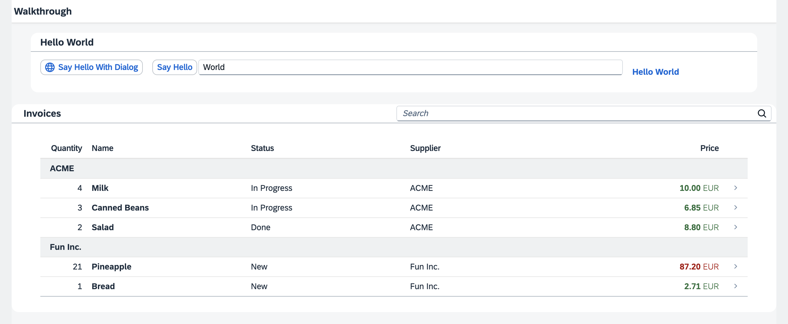

We first introduce you to the basic development paradigms like Model-View-Controller and establish a best-practice structure of our application. We'll do this along the classic example of "Hello World" and start a new app from scratch. Next, we'll introduce the fundamental data binding concepts of OpenUI5 and extend our app to show a list of invoices. We'll continue to add more functionality by adding navigation, extending controls, and making our app responsive. Finally we'll look at the testing features and the built-in support tools of OpenUI5.

You don't have to do all tutorial steps sequentially, you can also jump directly to any step you want. Just download the code from the previous step and make sure that the application runs as intended; for detailed instructions, see Downloading Code for a Tutorial Step.
You can view and download the samples for all steps in the Demo Kit at Walkthrough.
For more information, see the overview page: Get Started: Setup, Tutorials, and Demo Apps.